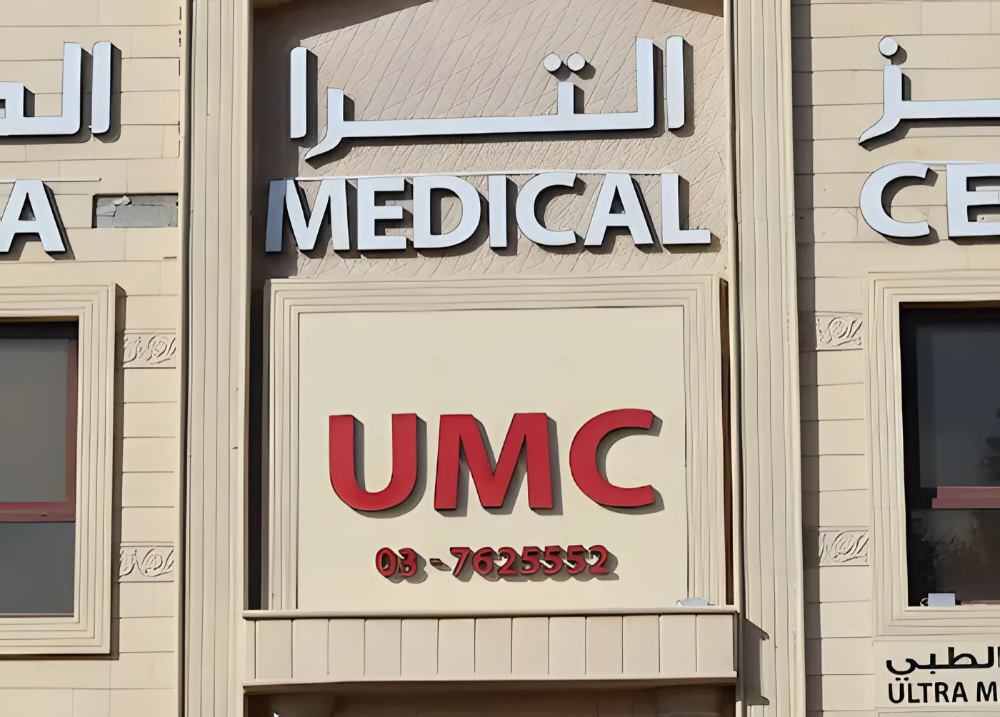

We opened in October 2015 so the families of Al Jimi could see their doctor, their dentist and get an X-ray without crossing the city. Today more than 10 doctors and 40 staff work here, across 17 departments.
Opposite the ministry complexNext to Al Jimi Mall and Al Safa CentreWheelchair entrance and parking

The front of the building, Sheikh Mubarak (Al Jimi) Roundabout.
Clinics and departments
Every department is on site. Tap one to see what the doctors there treat.
17departments in one building, from the Well Baby Clinic to the heart lab
Collect your prescription on the way out. The pharmacy is on the ground floor and accepts most insurance companies.
Medicines, vitamins and vaccines
Back and knee supports, medical pillows and mattresses
Blood pressure and sugar monitors, nebulisers
Baby products and formula, skin and hair care
X-ray and scans, same visit
No second appointment across town. The radiology department is upstairs from your doctor.
Digital X-ray (Carestream DR)
Ultrasound, colour Doppler, thyroid and neck
3D and 4D pregnancy scans
Dental panoramic and cephalometric X-ray
What patients say
مركز طبي متكامل يوجد به عيادة العظام وعيادة أطفال وعيادة نساء ومدخل الكراسي المتحركه وعلاج طبيعي للرجال والنساء وصيدلية .. ولايوجد تأخير .
Ali Alketbi, Google Local Guide. "A complete medical center: orthopaedics, children's and women's clinics, a wheelchair entrance, physiotherapy for men and women, a pharmacy, and no waiting."
"I'm so grateful in the Dental Department, they are so kind."
Almira D., Google review
"They have many machines so they are able to do extensive tests!!"
Fadi K., Google review
Find us
Open now
Sheikh Mubarak (Al Jimi) Roundabout, Al Jimi, Al Ain
Opposite the ministry complex, next to Al Jimi Mall and Al Safa Shopping Centre. Parking in front of the building.